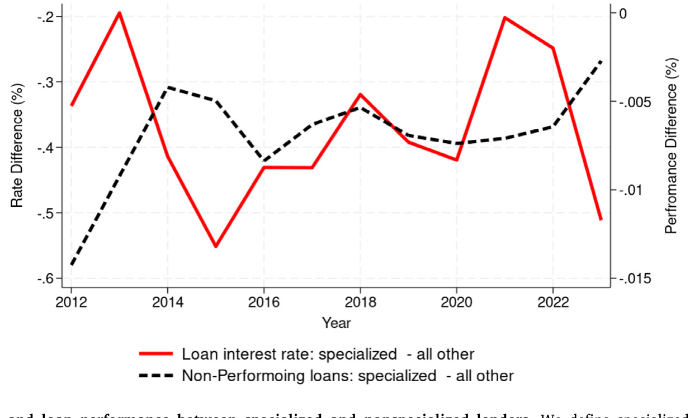
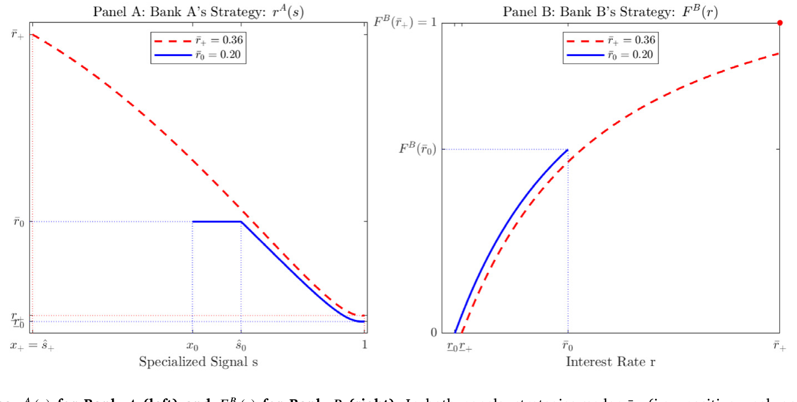
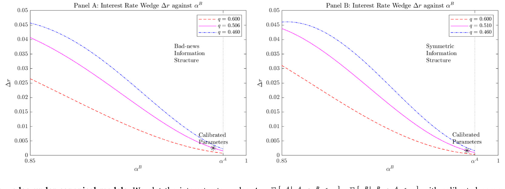
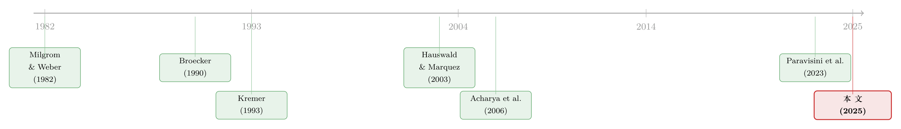

信息越多，利率反而越低？——专业化放贷里那道被理论算反的「楔子」
本文读的是 Blickle, He, Huang & Parlatore (2025, Journal of Financial Economics)：当一家「专业化」银行（对某个行业格外懂行）和一家「非专业化」银行争抢同一个借款人时，经典理论会预测——信息更好的那家应该收更高的利率（赢者的诅咒带来的「信息租金」）。可现实恰恰相反：专业化银行在自己的专长行业里反而少收约 40 个基点、坏账还更少。作者把银行的信息拆成「一般信号」和「专业信号」两层，证明那条额外的、连续的专业信号会逼着强势银行主动压价去抢好客户，从而内生地翻转了利率的符号。
1 引言：一个被理论「算反了」的事实
先说一个几乎所有银行从业者都会点头、可大多数理论模型却给不出来的现象。
一家深耕某个行业的银行——比如它特别懂能源、特别懂医疗器械、或者特别懂本地的中小企业——往往能在自己最熟的那片地里，把钱借得又便宜、又安全。便宜，是说它收的利率更低；安全，是说这些贷款事后违约得更少。这听上去顺理成章：懂行嘛，眼光好，自然敢压低价格去抢好客户。
但你若把这件事拿去问一个标准的银行竞争模型，它会一脸严肃地告诉你：你搞反了。
为什么？这就要从信贷竞争背后那个不太起眼、却极其顽固的逻辑——赢者的诅咒——说起。
2 谜题：信息越好，利率「应该」越高
设想两家银行同时给一个借款人报价，谁报的利率低，借款人就跟谁签。这本质上是一场共同价值拍卖（common-value auction）：贷款的真实质量对两家是一样的，只是各自掌握的信息不同。
现在，假设 A 银行的信息系统更精准。直觉上你会觉得它能因此压价。可经典模型（Broecker, 1990；Hauswald & Marquez, 2003）的结论恰恰相反。关键在于：在均衡里，借款人会接受更低的那个报价；于是「我赢了这单」这个事件本身，就携带了坏消息——往往意味着对手看到了我没看到的负面信息、主动退出了。这就是赢者的诅咒（winner's curse）。一家信息更好的银行，知道自己一旦赢得太轻松反而危险，于是它会反过来利用这份信息优势去索取租金：随机地把利率一路报到上限 r̄，反正它有底气，借款人有时也只能接受。结果是——信息越好的银行，放出去的贷款平均利率越高。作者把这股力量叫作信息租金效应（information rent effect）。
换句话说，经典理论预测的是一道正的利率楔子：强势的、信息更好的银行收费更贵。
可数据偏偏给出一道负的楔子。作者用美联储的监管级贷款数据（Y14-Q Schedule H）做了一个干净的对照：对每一家专业化银行，把它在专长行业里放的贷款，和它在其他行业里放的贷款相比。结果如图 1 所示——专业化银行在自己专长行业里持续地少收约 40 个基点，与此同时，这些贷款的不良率（nonperforming）也更低。

Figure 1: Differences in interest rates and loan performance between specialized and nonspecialized lenders. We define specialized lenders as those wi
于是张力就摆在桌面上了：懂行的银行收得更少、坏账更少，而最经典的信息模型却预测它该收得更多。 这不是一个细枝末节的反例，而是直指模型骨架的矛盾。论文要回答的核心问题就一句话：
一个建立在信息不对称之上的银行竞争模型，能不能内生地生成「信息更好的银行反而压价」这件事？
3 模型：两个状态，两种信号
接着，一个自然的问题是：经典模型到底缺了什么，才会把符号算反？作者的答案出人意料地朴素——它们把信息当成了「一个维度上的精度差异」。A 比 B 看得清，仅此而已。而真实世界里，专业化银行的优势不是「同一件事看得更清」，而是「多看到了一件别人根本看不到的事」。
要把这层意思放进模型，先得把「借款人质量」这件事拆开。
3.1 经济环境
两期、一种商品、风险中性。两家银行 j∈{A,B}，A 是专业化银行，B 是非专业化银行；一个借款人要借 1 美元投一个固定规模的风险项目，t=1 时的现金流取决于项目质量 θ∈{0,1}：
$$\tilde{y}=\begin{cases}1+\bar{r}, & \theta=1,\\[2pt] 0, & \theta=0,\end{cases}$$
其中 r̄>0 外生给定，可以理解成利率上限。违约时零回收。每家银行要么报一个不超过上限的利率 rⱼ≤r̄，要么干脆退出（记 rⱼ=∞）；借款人接受最低报价。
3.2 信息结构：把「质量」拆成两块
这里是全文的支点。作者借用了 Kremer (1993) 的 O 型环理论（O-ring theory） 的乘性结构：项目质量 θ 由两个相互独立的二元状态共同决定——一个「一般」状态 θ_g，一个「专业」状态 θ_s——两者都好，项目才成：
两类信息对应两类信号：
一般信号是二元的、且「决定性」的。 两家银行都能处理通用数据，得到一个二元信号 gⱼ∈{H,L}，其精度满足
$$P\big(g^{j}=H\mid\theta_g=1\big)=\alpha_u,\qquad P\big(g^{j}=L\mid\theta_g=0\big)=\alpha_d,\quad j\in\{A,B\}.$$
对称情形下 α_u=α_d=α∈(0.5,1]。所谓「决定性」，是说这个信号充当预筛（prescreening）：任何一家银行只要看到 L 就直接拒贷。作者用一条参数约束把这件事钉死——即便 A 看到最乐观的专业信号 s=1，只要一般信号是 L，这笔贷款对它仍是负 NPV：
$$q_g\big(1-\alpha_u\big)\bar{r} \;<\; \big(1-q_g\big)\alpha_d.$$
专业信号是连续的，只有 A 有。 这是本文与既有文献最关键的分野。A 银行额外观测一个连续信号，作者直接用它对专业状态为好的后验来表示：
$$s=\Pr\big[\theta_s=1\mid\mathcal{I}_s\big]\in[0,1],\qquad \int_0^1 s\,\phi(s)\,ds=q_s,$$
后一个等式是先验一致性。s 越高，A 越确信这个借款人「专业那一面」也过关。注意：B 银行在 θ_s 这个维度上两眼一抹黑，它只能拿先验 q_s 去蒙。
至此，模型的不对称就清楚了：不是「A 把同一件事看得更准」，而是「A 多看到了一个 B 完全看不到的维度」。
3.3 均衡：两种效应的角力
然后，把竞争装进来。一般信号决定性地做了第一道筛：B 看到 L 退出，A 看到 L 退出；只有在各自拿到 H 时才进入定价环节。进入之后，故事就分叉了：
- A 银行拿到
H后，会根据连续的s来微调利率——它的利率方案随s单调递减：越确信，报价越低。 - B 银行呢？它没有
s，一旦决定参与，只能像 Broecker (1990) 里那样，在一个区间上完全随机化（mixed strategy）自己的报价，以避免被对手系统性地揩油。
把两者叠起来，关键的一句话就出来了：当 A 拿到一个足够好的专业信号 s 时，它能稳稳地压过 B 的报价、把好客户抢走。 这就是作者命名的基于私人信息的定价效应（private information–based pricing effect）——它压低了专业化银行已放出贷款的平均利率。
但别忘了前面那股反方向的力。当 A 的专业信号一般、或者它在这个市场上垄断力很强时，它仍然会施展信息租金效应：随机地把利率报到上限 r̄，靠垄断地位多赚一笔，从而抬高平均利率。
整个均衡，就是这两股力的角力。它唯一存在，但会落进两个区间之一：
- 零利润弱者均衡（zero-weak equilibrium）：竞争弱时，赢者的诅咒把非专业的「弱者」B 压到零利润，B 在拿到正面一般信号后会随机退出，把更多垄断力让给 A。这里信息租金效应占上风。
- 正利润弱者均衡（positive-weak equilibrium）：竞争强时，B 能赚到正利润，于是只要拿到
H就总是参与。这逼得 A 垄断力下降、不得不更激进地压价去抢好客户。这里，基于私人信息的定价效应占了上风。
图 2 画出了两家在均衡里的定价策略：左边是专业化银行 A 那条随 s 递减的利率方案，右边是非专业化银行 B 那团随机化的报价。

Figure 2: Equilibrium strategies for Bank (left) and for Bank (right). In both panels, strategies under (i.e., positive-weak equilibrium) are depicted
这里有个特别容易被忽略、却被作者反复强调的区分：我们在数据里看到的利率，是「中标价」（winning bids）——被借款人接受了的那些报价；而不是「报价」（bids）——所有挂出去的利率。赢者的诅咒确实会推着弱者把报价抬高，但它同时也会让弱者拒掉更多申请。一旦贷款拒绝本身是均衡策略的重要一环，「中标价」和「报价」就会系统性地分道扬镳。绝大多数实证研究量的是前者，可很多理论默认讨论的是后者——这正是符号被算反的一个隐蔽来源。
4 反转：标准模型为什么算不出负楔子
到这一步，真正关键的一步来了：作者要证明，不引入专业信号，单靠精度差异的经典模型，根本生不出那道负楔子——这不是「调一调参数」就能补救的，而是结构性的。
他们把 Broecker (1990) 一类的标准设定，按美国银行业的数据校准参数，直接算出其隐含的利率楔子。结论很硬：在相关参数下，信息租金效应强到压倒一切，标准模型只会吐出正的楔子——也就是「信息更好的银行收费更高」，与图 1 南辕北辙。图 4 把这个校准结果画了出来（固定 r̄=0.36）。

Figure 4: Interest rate wedge under canonical models. We plot the interest rate wedge with calibrated parameters. We fix 𝑟̄=0.36
于是反转才显出分量：要让理论和「专业化银行压价」这件事和解，必须给强势银行一个额外的、连续的私人信号，让它在信号好的时候有动机、也有能力去主动让利抢客户。这正是本文的核心贡献——它在一个信息不对称的框架里，内生地生成了基于私人信息的定价，从而把那道顽固的正楔子翻成了负的。
（关于「信息如何重塑信贷市场的定价与福利」，可参见《数据让定价更准，谁的钱包先变薄？》；而「逆向选择如何在多层信贷市场里被层层放大」，则可对照《钱越来越好借，中间商却越赚越多》。)
5 数据与实证：把机制落到地上
模型之外，作者用一个简单却有说服力的实证练习给机制「接地」。数据来自美联储维护的 Y14-Q Schedule H 监管级贷款层面数据库。专业化的度量沿用 Blickle, Parlatore & Saunders (2025) 的口径：一家银行在某行业的贷款占比，相对该行业在「分散化」基准组合里的占比，高出 4% 以上，就算它在这个行业「专业化」。
核心事实就是图 1 那两条线：把同一家银行专长行业内的贷款，与它专长行业外的贷款相比——
- 利率：专长行业内低约
40个基点，且这个差距在样本期里相当稳定； - 表现：专长行业内的贷款，不良率也更低。
更难得的是，作者强调这个结果不是专业化银行之间相互竞争压出来的——也就是说，它确实来自「专业信息」本身，而非单纯的市场结构。这个规律在更严格的计量设定、以及替代的 SNC（Shared National Credit）数据下都站得住（Section 3.4）。
（顺带一提，银行如何在「竞争」与「定价」之间权衡，本身就是一条富矿，可对照《你以为银行在跟邻居竞争，其实它在全国统一调价》。）
6 文献脉络
把这条线索捋一捋，本文落在三股传统的交汇处。
第一股，是信贷竞争作为共同价值拍卖的传统。 源头是 Broecker (1990)：对称的银行、各自做一次筛查测试，竞争中谁的信号好谁占优。Hauswald & Marquez (2003) 把它推向不对称——一家「内部银行」能做信用筛查、一家「外部银行」不能。再往上追，这一类问题的母体是 Milgrom & Weber (1982) 那篇共同价值拍卖的经典，以及 Riordan (1993) 把 Broecker 推广到带连续私人信号的 N 家对称银行。本文的巧妙之处，是把 Broecker（对称、一般信号）和 Milgrom-Weber（不对称、一个带专业信号的买家）焊在一起，却又让两家银行各自握有不同的一般信号，从而打破了 Milgrom-Weber 里那种整洁的信息 Blackwell 排序，换来一组更丰富、却仍有闭式解的结果。

第二股，是银行专业化的实证传统。 早期有 Acharya, Hasan & Saunders (2006) 问「银行该不该多元化」；近期 Paravisini, Rappoport & Schnabl (2023) 用秘鲁数据证明银行会按出口市场专业化、并让客户受益；而 Blickle, Parlatore & Saunders (2025) 正是本文的「姊妹篇」，记录了美国压力测试银行如何按行业专业化其组合。本文的理论，恰好为这一串实证规律提供了一个统一的微观机制。
第三股，是 O-ring 式的乘性生产结构（Kremer, 1993）——它让「一般」与「专业」两个状态必须同时为好、项目才成，这正是「专业信息不可替代」的数学化身。
放在这张地图上，本文的位置就清楚了：它不是在某条线上再加一块砖，而是把「拍卖式的信贷竞争」与「多维信息下的专业化」缝在一起，给出了一个能同时解释低利率与低坏账的、可解的均衡。
评论与延伸（Q&A + 研究方向）
(a) 几个可能的疑问
Q：「专业信号」和经典模型里「更精准的信号」到底差在哪？
差在维度，不在精度。经典模型是 A、B 在同一个状态上精度不同（Blackwell 可比），结果赢者的诅咒主导，强者抬价。本文里 A 多看到了一个 B 完全观测不到的独立维度
θ_s，且这个信号是连续的。正是「连续 + 独立维度」让 A 能做精细的、随信号递减的定价，进而在信号好时主动压价。
Q：负楔子是模型里「总会」出现，还是只在特定区间？
只在正利润弱者均衡里占上风。竞争足够强、B 能赚正利润并总是参与时，A 垄断力被削弱、被迫激进压价，基于私人信息的定价效应胜出，楔子为负。反过来在零利润弱者均衡里，信息租金效应主导，楔子可能为正。所以本文并非否定赢者的诅咒，而是指出它何时会被另一股力压过去。
Q：那 40 个基点的实证差异，可信吗？会不会只是「好客户自己跑去找专业银行」？
这是最该担心的内生性。作者的设计是银行内对照（同一家银行的专长行业 vs 非专长行业），这吃掉了银行层面不随行业变化的选择效应；他们还强调结果不是专业银行间竞争所致，并用
SNC数据复核。但「行业 × 借款人」层面的匹配性选择，严格说仍未被完全证伪——这点下面会展开。
Q：「中标价 vs 报价」的区分，为什么是技术细节却又如此关键？
因为拒贷是均衡策略的一部分。赢者的诅咒让弱者报价更高，但它同时拒掉更多申请；我们在数据里只看得到被接受的「中标价」。如果用「中标价」去检验一个本是关于「报价」的预测，符号就可能被系统性地读错。本文把这条逻辑显式化，本身就是一个方法论提醒。
Q：模型里 A 银行有没有「市场势力」？这和产业组织（IO）那套有何不同？
没有传统意义的市场势力。本文里 A、B 的资金来源完全可替代，借款人也不区分产品，所以既无 IO 里的产品差异化市场势力，也无借款人侧的逆向选择。唯一的原始摩擦就是信息不对称，赢者的诅咒是唯一的底层力量。这与 Mahoney & Weyl (2017)、Crawford et al. (2018) 那种「市场势力 × 逆向选择」的框架是两条路。
Q：把回收率设成零，是不是太极端？
基准设定确实假设违约零回收（沿用 Broecker, 1990）。作者在附录里给出了非零回收
δ∈(0,1)的闭式解，且在做参数校准、匹配实证矩时正是用了非零回收的版本——所以零回收只是为了基准推导的整洁，结论不依赖它。
(b) 几个可能的研究问题与提案
1. 把这套机制搬到公司债的一级市场
【经济故事】承销商对某些行业/发行人格外懂行（类似 Butler, 2008 里「本地承销商压低市政债收益率」），那么在公司债发行定价里，是否也存在一道「专业承销商负楔子」？机制和本文同构：专业信息让承销商敢于压低初始收益率去抢好发行人。 【可行性】中。需要 Mergent FISD + 承销商-发行人配对数据，按承销商的行业集中度构造专业化度量；识别上可借本文的「承销商内、专长行业 vs 非专长行业」对照。难点是承销费与收益率的联合定价、以及配售机制带来的中标价/报价问题。
2. 外资持有人作为「专业信号」的缺失方
【经济故事】外资机构在陌生市场往往缺乏本地「专业信息」，按本文逻辑，它们更像那个只有一般信号的 B 银行——会更保守、更易被本地玩家「撇脂」。这能为「外资在公司债市场定价偏弱、流动性贡献有限」提供一个信息维度的解释。 【可行性】中。需要 TRACE + 持有人层面数据（如 eMAXX/13F 映射到债券）；识别可比较外资 vs 本地机构在「信息密集」行业债券上的买卖与持有回报差异。挑战是把「专业信息缺失」与「监管/久期偏好」分开。
3. 信息技术冲击如何重画「专业化地图」
【经济故事】本文的扩展把信息结构内生化：一般信息投一次可覆盖多行业，专业信息要逐行业获取。当 IT 大幅降低一般信息成本时（He et al. 在文中提到美国银行 IT 投资显著上升），专业化的边界会怎么移动？谁的负楔子会缩小？ 【可行性】中偏低。需要银行 IT 投入的面板（call report / 招聘数据代理）叠加
Y14；识别可用 IT 成本的区域性冲击做 DiD。难点是 IT 投入本身的内生性。
4. 把「中标价 vs 报价」做成一个可检验的拒贷实证
【经济故事】本文最锋利的方法论点是：拒贷是均衡的一部分，观测到的利率有幸存者偏差。若能同时观测到被拒的申请，就能直接把「报价分布」还原出来，检验赢者的诅咒究竟把弱者的报价抬高了多少。 【可行性】中。需要含申请-拒绝信息的数据（如部分 HMDA、或银行内部信贷申请库）。doable，但拿到「报价而非成交价」的数据是最大门槛。
我的判断
这篇论文最漂亮的地方，是它没有靠「加摩擦」来硬凑出反常事实，而是把信息这件事拆得更真实了一层——从「一个维度上的精度差」走到「多了一个独立维度」——结果一个长期与经典理论相悖的实证规律，就自然地从均衡里长了出来，而且还保有闭式解。这种「换一个更贴近现实的原语，旧矛盾自动消解」的工作，是理论该有的样子。「中标价 vs 报价」的辨析，更是给整条银行竞争实证文献提了个醒。
要说担忧，仍在识别。40 个基点的核心事实建立在「银行内、专长 vs 非专长行业」的对照上，这能吸收掉银行层面的选择，却未必吸收得掉「行业 × 借款人」层面的匹配性内生——好借款人为何恰好流向懂行的银行，本身可能就是均衡的结果，而非外生。模型说这是专业信息所致，但实证上把「信息」与「匹配/选择」干净地剥开，仍是悬而未决的一步。
后续我最想看到两件事：其一，把被拒申请纳进来，直接估出「报价分布」，正面检验赢者的诅咒的量级；其二，找一个对专业信息的外生冲击（如某行业突发的信息技术或披露变革），看那道负楔子是否随之收窄——若能做到，机制就从「自洽」升级为「被识别」。
参考文献
- Acharya, V. V., Hasan, I., & Saunders, A. (2006). Should banks be diversified? Evidence from individual bank loan portfolios. Journal of Business 79(3), 1355–1412.
- Blickle, K., Parlatore, C., & Saunders, A. (2025). Specialization in banking. Journal of Finance (Forthcoming).
- Broecker, T. (1990). Credit-worthiness tests and interbank competition. Econometrica 58(2), 429–452.
- Butler, A. W. (2008). Distance still matters: Evidence from municipal bond underwriting. Review of Financial Studies 21(2), 763–784.
- Hauswald, R., & Marquez, R. (2003). Information technology and financial services competition. Review of Financial Studies 16(3), 921–948.
- Kremer, M. (1993). The O-ring theory of economic development. Quarterly Journal of Economics 108(3), 551–575.
- Milgrom, P., & Weber, R. J. (1982). A theory of auctions and competitive bidding. Econometrica 50(5), 1089–1122.
- Paravisini, D., Rappoport, V., & Schnabl, P. (2023). Specialization in bank lending: Evidence from exporting firms. Journal of Finance 78(4), 2049–2085.
- Riordan, M. H. (1993). Competition and bank performance: A theoretical perspective. In C. Mayer & X. Vives (Eds.), Capital Markets and Financial Intermediation (pp. 328–343). Cambridge University Press.